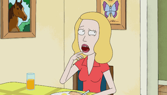

|  | Bethany“ Beth” Smith（néeSanchez）（由Sarah Chalke讲））是里克的女儿，萨默和莫蒂的母亲，杰里的妻子。她是一名兽医，专长于马术，她的内部感觉是她的工作比她低，而且在将她的职业与人类医学相比时，她通常是防御性的。她头脑冷静，举足轻重，与丈夫的自我斗争，后者无视他公认的平庸而。壮成长。贝丝对自己的生活深感不满的原因是她认为自己已经“安顿”了自己的婚姻，家庭和工作，因此有几集引起了人们的极大不满。她想成为一名“真正的”外科医师，但在17岁的夏天就怀孕了。她是家庭中最自信的力量，同时还表现出自私，幽默和智慧的特质。贝丝对父亲围绕儿子的破坏性和危险性趋势不感到困扰。她，[3]哈蒙（Harmon）在一次采访中谈到了这个起源：“孩子们有时会偶像自己最糟糕的父母，并责备他们的支持父母，因为胆量大而赶走了父亲。……她认为里克和他一样疯狂，即使她由母亲抚养长大，她还是两个父母中最好的一个。她将母亲的无懈可击归咎于父亲的离开，并将尽一切努力使父亲重返生活。” [3]在《里克申克的赎罪》中“贝丝伤心欲绝，因为瑞克再次放弃了她，并且对联盟的新条件感到不满，因为他们提供的药物使马匹比以往任何时候都更健康，这影响了她的工作。当瑞克再次回到家时，她感到很高兴，但杰里对瑞克感到厌倦，迫使她在里克和他本人之间进行选择；贝丝选择了瑞克而不是杰里，这导致了他们的离婚。在《贝丝的ABC》中，贝丝与父亲有着相同的社交病倾向。当她可以探索多元宇宙时，一个自己的克隆人倾向于照顾自己的家人，她开始相信自己就是那个克隆人，并向杰瑞求助。贝丝意识到自己爱杰瑞，并取消了离婚，与她续约了。她的家人，不再对瑞克再次抛弃她感到不安。 |